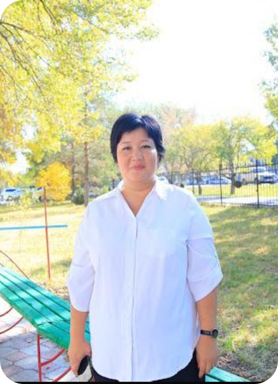

|  | Аяганова Аяжан Жанбаевна |
| Лауазымы | «Электроника және коммуникациялар» орталығының меңгерушісі |
|---|---|
| Бітірген оқу орны | Д.Серікбаев атындағы Шығыс Қазақстан мемлекеттік техникалық университеті |
| Диплом бойынша білімі | Жоғары, мамандығы: 050716 – Аспаптар жасау, 2004–2008 Жоғарыдан кейінгі білім, мамандығы: 6М070200 – «Автоматтандыру және басқару», 2011–2013 |
| Ғылыми дәрежесі, ғылыми атағы | «Автоматтандыру және басқару» мамандығы бойынша техника ғылымдарының магистрі |
| Біліктілігі және еңбек өтілі | Педагог-сарапшы, 16 жыл |
| Оқытатын модульдер | Прототиптік аппараттық құралдарды жобалау, Электрондық техниканың құрылғыларын, блоктары мен аспаптарын монтаждау және баптауды орындау, Кірістірілген жүйелерді бағдарламалау |
| Байланыс ақпараты | Ayazhanayaganova@mail.ru |
| Қосымша ақпараттар | WorldSkills Zhetysu, WorldSkills Kazakhstan «Электроника» құзыреттілігі бойынша сарапшы |